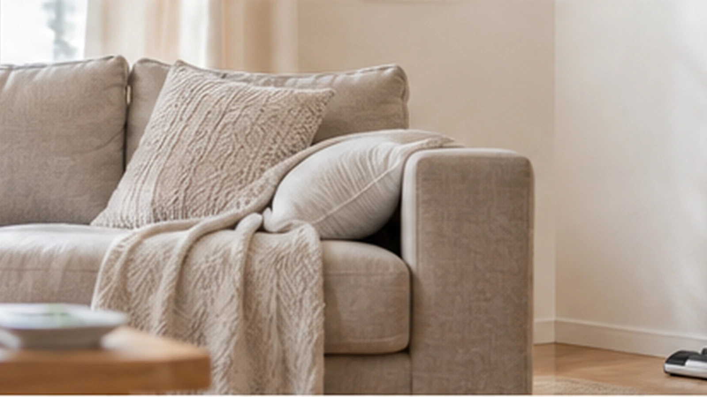
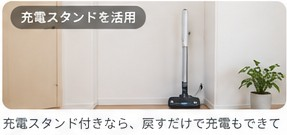

掃除機を出すのが面倒！すぐ使える収納場所は？
掃除機を出すのが面倒なら、見えない場所へしまい込むより、よく掃除する場所の近くでワンアクションで取れる収納が向いています。

結論：掃除機は「きれいに隠す」より「すぐ取れる」を優先
掃除機をかけるまでに扉を開け、物をどかし、本体を取り出す必要があると、掃除そのものより準備が面倒になります。
収納場所は使用頻度で決める
毎日〜数日に1回使うなら、リビング近くや廊下収納など生活動線上が便利です。月に数回なら奥の収納でも困りにくいでしょう。

コードレスは充電までセットで考える
コードレス掃除機は、収納場所にコンセントがあると「戻す＝充電」になってラクです。充電器だけ別の場所だと、戻す工程が増えます。
出しっぱなしでもいい
壁際や家具の陰など、視線に入りにくい場所なら出したままでも十分。掃除頻度が上がるなら、完全に隠すことよりメリットがあります。

床置きする物を減らすとさらにラク
掃除機を出しやすくしても、毎回床の物をどかす必要があると面倒です。バッグやゴミ箱など、浮かせられる物から減らすと掃除開始までが短くなります。

まとめ
掃除機収納は「収納の美しさ」より、使い始めるまでの動作数で決めるのがおすすめです。
この悩みで使いやすいアイテム
当サイトはアフィリエイト広告を利用しています。
掃除機 壁掛け 収納 穴あけ不要
ショップ連携後に購入先ボタンが表示されます。
チラカランの考え方
頑張る回数を増やすより、頑張らなくても回る仕組みを。